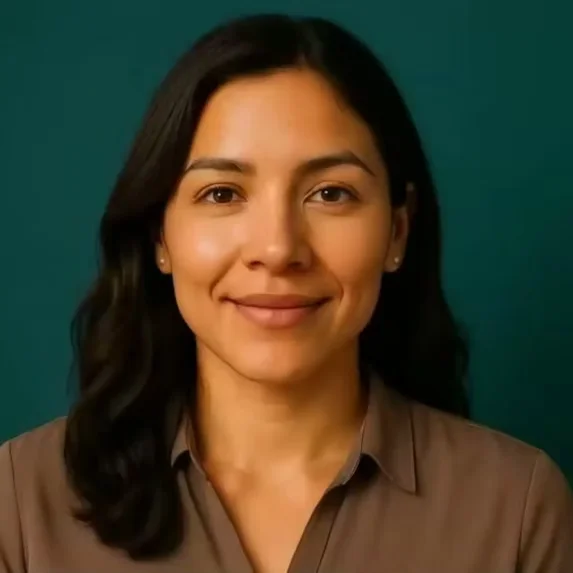
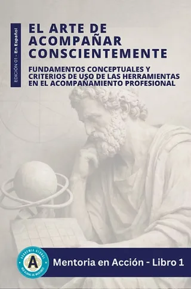

Análisis de casos
Contenido teórico/práctico de numerosas herramientas de mentoría.
Formarte continuamente no solo amplía tu saber; amplía tu impacto como mentor o mentora.

¿Prefieres comenzar acompañado/a?
Para iniciar este recorrido y si lo consideras necesario, nos ponemos a disposición para que tengas una videollamada con uno de nuestros mentores docentes que pueda explicarte el proceso de formación. Solicita la entrevista por WhatsApp: +54 9 341 5421624.
Además, el primer jueves de cada mes, a las 15 h (hora de Argentina), realizamos encuentros virtuales. Consulta la agenda y regístrate para recibir el acceso.
Te invitamos a navegar por los contenidos de este programa
Y con suma consciencia y responsabilidad, lee con detenimiento y profundiza con investigación aquellos temas que más sentido te hacen para tu práctica profesional.
La intención de este contenido es acercarte algunas razones de «por qué y para qué» realizar análisis de casos luego de cada uno de los procesos de mentoría que realices con tus clientes, y despertar tu interés para que lo pongas en práctica y lo incorpores a tu práctica profesional de la mentoría.
La tríada funcional de la mentoría consciente
Esta tríada de guías propone un recorrido completo, coherente y exigente, que articula criterio, acción y reflexión, tres dimensiones inseparables de una práctica consciente.

Libro 1 – Fundamentos y mapa de herramientas
El marco conceptual y ético desde el cual las herramientas adquieren sentido: disciplinas del acompañamiento, rol profesional y mapa de herramientas. Se analiza en la formación de Herramientas de mentoría.

Libro 2 – Fichas pedagógicas para la sesión
Las herramientas como fichas pedagógicas, dispositivos de decisión consciente para el momento más delicado: cuando intervenir… y cuando no hacerlo. Se analiza en la formación de Herramientas de mentoría.

Libro 3 – Análisis de casos y práctica reflexiva
El tercer libro aborda un punto clave de la mentoría experta: la capacidad de reflexionar sobre la propia práctica. Se aprende a analizar casos reales, explicitar decisiones y límites, transformar experiencia en aprendizaje transferible y consolidar un método propio, ético y consciente. Convierte la práctica en conocimiento, y el conocimiento en madurez profesional.
Proceso formativo y desarrollador
Análisis de casos: Tomo III. Los Tomos I y II se analizan en la formación de Herramientas de mentoría. Los siguientes videos complementan la lectura de la guía mencionada.
Por qué el mentor necesita analizar sus procesos
Objetivo
Despertar conciencia. Muchos mentores finalizan una sesión… y pasan a la siguiente. Pero el verdadero crecimiento profesional ocurre después.
En esta etapa el/la mentor/a comprenderá:
- Qué es el análisis de casos.
- Por qué no es autocrítica destructiva.
- Por qué no es auditoría fría.
- Por qué es un acto de responsabilidad profesional.
- Cómo el análisis transforma experiencia en aprendizaje.
Conceptos clave
- Experiencia vs aprendizaje.
- Error como fuente de mejora.
- La mentoría como disciplina que exige revisión.
- El mentor que no revisa… repite.
Resultados esperados
El/la mentor/a entiende que analizar sus procesos no es opcional, sino parte de la ética profesional.
Qué analizar: las dimensiones del proceso de mentoría
Objetivo
Dar estructura. Aquí el/la mentor/a aprende que el análisis no es emocional ni improvisado. Es sistemático.
Dimensiones sugeridas para analizar
- Claridad del encuadre.
- Adecuación de herramientas.
- Calidad de escucha.
- Nivel de intervención.
- Límites disciplinares.
- Evolución del mentorado.
- Coherencia entre objetivo y proceso.
Se responde a preguntas como
- ¿Intervine demasiado?
- ¿Forcé una herramienta?
- ¿Respeté el ritmo?
- ¿El proceso tuvo arquitectura o improvisación?
- ¿Hubo señales que no leí?
Resultados esperados
El/la mentor/a obtiene un marco concreto para revisar cada proceso.
Cómo realizar el análisis sin caer en autoexigencia destructiva
Objetivo
Formar madurez profesional. El riesgo aquí es doble:
- O no analizar nada.
- O analizar desde la culpa.
En esta etapa se trabaja
- Análisis como aprendizaje.
- Diferencia entre error y negligencia.
- Cómo registrar procesos.
- Cómo hacer revisión individual.
- Cómo participar en espacios de supervisión.
También se introduce
El análisis como práctica periódica, no eventual.
Resultados esperados
El/la mentor/a comprende que el análisis no busca perfección, sino evolución.
Convertir el análisis en sistema de mejora continua
Objetivo
Integrar como hábito. Aquí se eleva el nivel: el análisis no es solo revisar lo que pasó. Es construir una identidad profesional reflexiva.
Se trabajan
- Rutinas de revisión.
- Indicadores de madurez.
- Revisión trimestral de procesos.
- Identificación de patrones repetitivos.
- Diseño de planes personales de mejora.
Concepto central
El mentor evoluciona en la medida en que transforma cada proceso en fuente de aprendizaje.
Aquí se instala la idea clave
La mejora continua no es técnica. Es una postura profesional.
Resultados esperados
El/la mentor/a diseña su propio sistema de revisión.
Cada nuevo conocimiento expande tu preparación
Aumenta tu capacidad de asistir con mayor claridad, responsabilidad y profundidad.